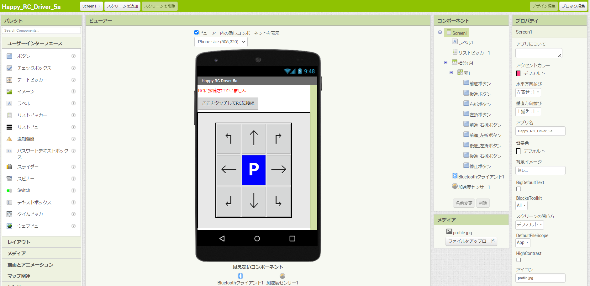
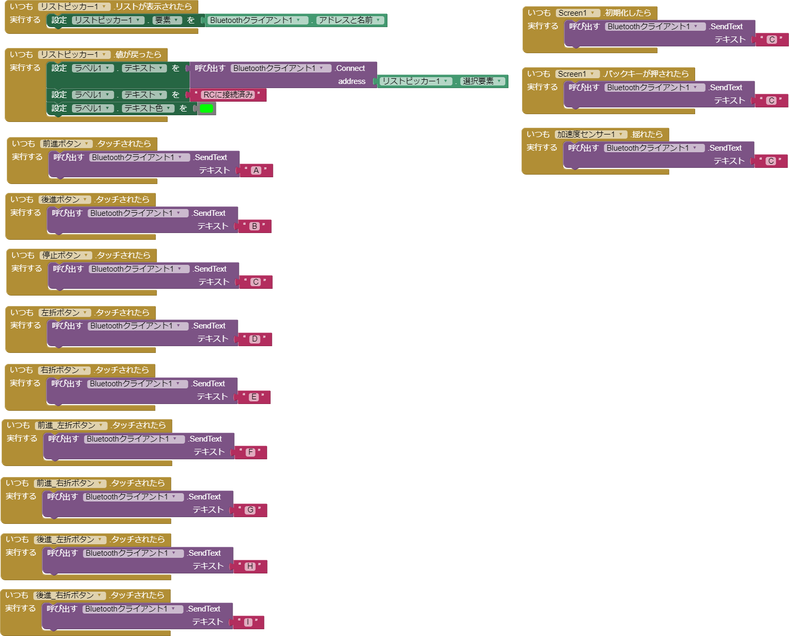
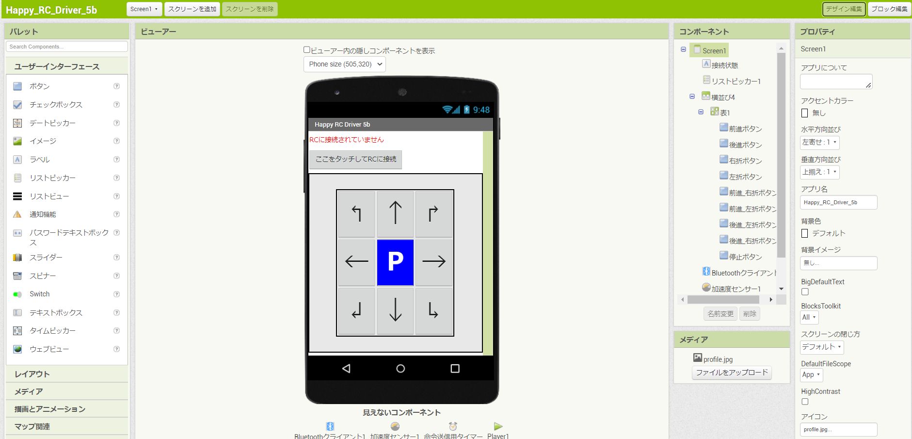
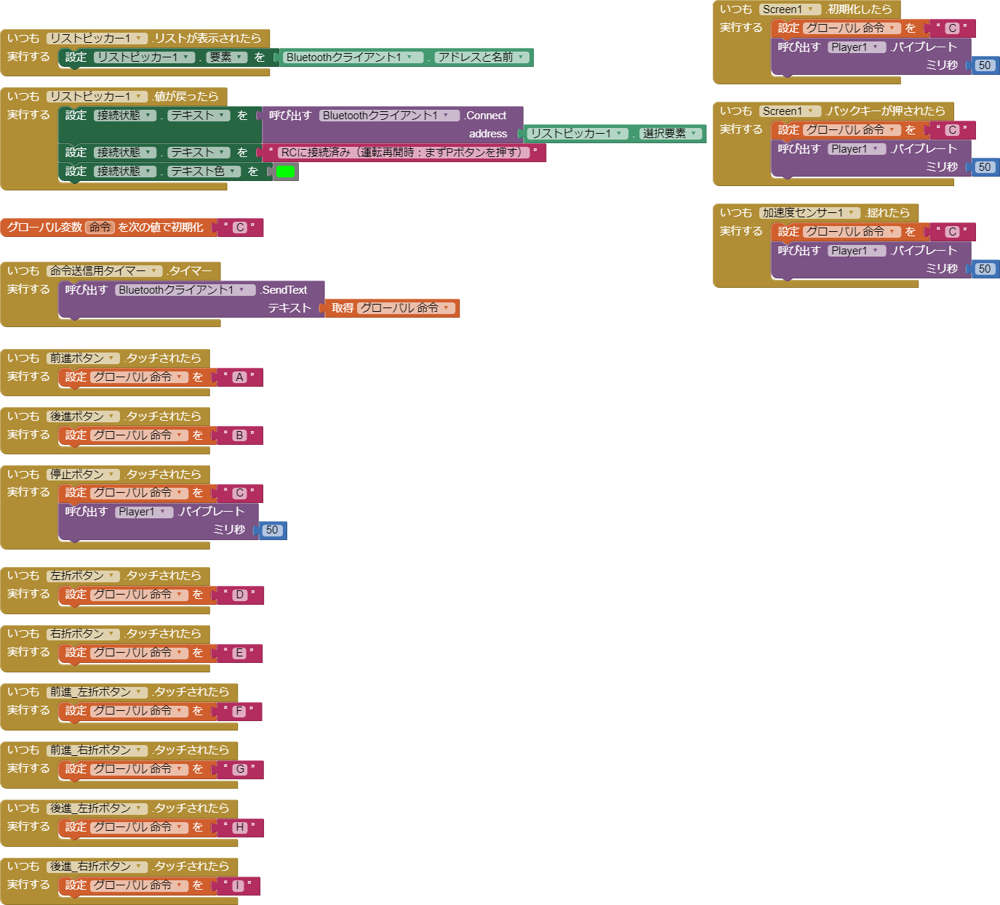

～ 目次 ～
1. 前回までの課題
前回はRCの操作性を向上させるために色々工夫をしました。
記事の最後のほうでは、bluetooth通信に謎の遅延が発生する問題について触れました。
まずは、この問題について調べた内容や解決策について書きます！
2. なぜ遅延が起こったのか
今私の試している装置（bluetoothモジュール）では、「2秒間送受信→2秒間お休み→2秒間送受信→…（繰り返し）」という謎の動きをします。
Arduinoのフォーラム1でも同じような悩みを抱えている人がいたので、問題解決の参考に読んでみました。
3. フォーラムの内容
HC-05には動作状態を表す赤色のLEDがついています。質問者はLEDが点灯していない時間を"wating period"と呼んで問題を説明しています。
質問者の投稿によれば、“wating period"の間は遅延が無いと言っています。実際私も同じ状況で、LEDが点灯していない（“wating period”）の間はスマホのボタンを押したらすぐにRCが反応します。
逆にLEDが点滅している(2秒間くらい)はスマホアプリを操作しても全く反応しませんでした。これも質問者と全く同じ挙動です。
フォーラムの中では色々な原因が述べられていたので、その中のいくつかを箇条書きでまとめます。
- 送信側のソフトに問題がある
- 同じシリアルポートでHC-05とシリアルモニターを動かしている
- HC-05がATコマンドモード(※)に入っている
- HC-05に入力している電圧が間違えている
- RXとTXを逆につないでいる
- HC-05に欠陥がある
※ATコマンド：AT▲▲という形式（▲▲のところにはアルファベット・記号・数字が入る。文字数は色々）で命令を送る通信方法のようです。例えば、ATAならコマンド強制着信、ATEnならコマンドエコーなどの命令になる2みたいです。
初めからHC-05が壊れていると考えたくなかったので、上の項目から順番に確認していきました。でも結局、私の買ったHC-05に欠陥が問題があることが判明しました。（1個1000円もしなくて安かった無理もないかぁ…）
フォーラムの質問者もモジュールを交換してちゃんと動いたと言っていました。
私はESP32を使って、HC-05のときと同じ条件で実験したらちゃんと動きました。
4. 改良の過程
この記事のタイトルは ”bluetoothモジュールで…” となっていますが、今回からはESP32を使ってBluetooth接続をします。
ESP32は技適マークがついているので、日本でも安心して実験ができます。ESP32は色々なモデルがあるのですが、ESP32-WROOM-32E を使って実験をしました。
以下では改良過程を記載しましたが、すぐに動かしてみたいという方は4.1.1項で使う装置を確認したあと、6.1節を見ながら作業やってみてください。
4.1. ◆ ver.5a ～ESP32用にプログラムと回路を変更～
4.1.1. 使ったもの
今回の実験で使ったハードウェアをリストアップしておきます。第3回とは異なり、マイコンにはESP32を使用しました。操作に使ったアプリは後ほど紹介します。
- ラジコンカー本体：ECX Barrage 1.9（1/12スケール） ←1/10スケールのRCがオススメ
- 操縦用スマホ（送信機）：Moto g pro（Android 12）
- マイコン（受信機）：ESP32-WROOM-32E
- モバイルバッテリー：SANYO KBC-L54D (3.7V Li-ion 5400mAh ※INPUT,OUTPUT=5.0V)
- 走行用バッテリー：Dynamite Speedpack (7.2V Ni-MH 700mAh)←7.4v Li-Po でも可
- サーボモータ：Hitec DB777WP ←1/10スケールカー用
- 走行用モータ：Tazer 370 Motor （DYNS1209）←1/10スケールRCだと540モータ多いと思います
- クローラ用ESC：TEKIN BXR（クローララジコン用ESC）
必ずしも上の装置でないと動かないわけではないので安心してください。自分の持っている装置に合わせて自由に組み合わせて良いです。（上の項目で太字になっているキーワードが重要です！）
ラジコンカーのキットとRC装置をそろえるのが大変という方は、組み立て済みのRCカーを買うのがオススメです。（上の1,5,6,7,8のものが一気に揃います。注意：項目8のESCはクローラ用ではない可能性が高いです）
ESCに関してはクローララジコン用のものを推奨します（アプリをドラグブレーキがあるとして設計にしています）。クローラ用ESCにはドラグブレーキ※がついているので便利です。
※ドラグブレーキ
スロットルを操作していないときに、自動的にブレーキがかかる機能です。この機能のおかげで、斜面に車体をおいても勝手に下がっていくのを防いでくれます。
4.1.2. 作った回路
回路は下のようになります。ESCはマイナス極と信号線（PWMピン）しか配線しないので注意してください。（プラス極には配線しないこと）
また、回路図上ではモバイルバッテリーに結線されていますが、実際に接続するときはモバイルバッテリーとESP32をUSBケーブルで接続すれば大丈夫です。
4.1.3. ソースコード
こちらがArduinoマイコンに書き込んだソースコードです。これはver.4と同じで文字を送信してステアとスロットルを操作します。
下の図はそれぞれの記号（A~I）と、それに対応する動作（前後左右にどう動くか）を整理したものです。（図は前回と同じ）

#include "BluetoothSerial.h" //ESP32のBluetooth通信に使用
#include <Servo.h> //サーボモータの制御に使用
Servo myservo; // サーボモータを制御するためのServoオブジェクト作成
Servo myesc; // ESCを制御するためのServoオブジェクト作成
/* ステアリングの設定 */
int center_pos = 93; //ステア中心位置 [サーボモータの中心位置 (90°)] ★まっすぐ走るように調整
int left_DR = 20; //左の切れ角
int right_DR = 25; //右の切れ角
int left_max = center_pos - left_DR; //左ステアの最大位置 [中心位置より反時計回りに20°（left_DR）回転した位置]
int right_max = center_pos + right_DR; //右ステアの最大位置 [中心位置より時計回りに25°（right_DR）回転した位置]
/* スロットルの設定 */
int neutral_pos = 91; //中立位置 [スロットルの中立位置 (90) ※ESCの設定によってずれがあるので、前後に走行しないよう値を調整する。ESC側を90で中立になるよう設定してもよい。]
int forward_DR = 20; //前進の速さ
int backward_DR = 20; //バックの速さ
int forward_max = neutral_pos + forward_DR; //前進の最大位置
int backward_max = neutral_pos - backward_DR; //バックの最大位置
//速度(mov_speed_ST,mov_speed_TH)は 1~255 の範囲で与える。（0にすると最大速度で移動）
//スロットル、サーボモータの値(pos)の範囲は、 0≦ pos ≦180 で与える。
//myservo.write 関数には回転角を絶対的な位置で与える。例) 90°から 45°反時計回りに動いてほしいときは、-45ではなく、45を関数に入力する。
BluetoothSerial ESP_BT; //ESP_BTという名前でオブジェクトを定義
void setup() {
Serial.begin(115200); //シリアルモニタで確認用
ESP_BT.begin("ESP32_RC_Receiver"); //接続画面で表示される名前を設定
myservo.attach(4); //サーボモータのPWM端子とArduinoの9番ピンを接続
myesc.attach(16); //ESCのPWM端子とArduinoの6番ピンを接続
/*勝手には走りださないように設定*/
myservo.write(center_pos); // ステアを中心(Center)に
myesc.write(neutral_pos); //中立(Neutral)
}
void loop() {
if (ESP_BT.available()) {
char input = ESP_BT.read(); //受信したテキストを変数inputに保存
Serial.println(input); //受信したテキストをシリアルモニタに表示
if (input == 'A') {
myservo.write(center_pos); // ステアを中心(Center)に
myesc.write(forward_max); //前進(Forward)
} else if (input == 'B') {
myservo.write(center_pos); // ステアを中心(Center)に
myesc.write(backward_max); //後退(Backward)
} else if (input == 'C') {
myservo.write(center_pos); // ステアを中心(Center)に
myesc.write(neutral_pos); //中立(Neutral)
} else if (input == 'D') {
myservo.write(left_max); // ステアを左(Left)に切る
myesc.write(neutral_pos); //中立(Neutral)
} else if (input == 'E') {
myservo.write(right_max); //ステアを右(Right)に切る
myesc.write(neutral_pos); //中立(Neutral)
} else if (input == 'F') {
myservo.write(left_max); // ステアを左(Left)に切る
myesc.write(forward_max); //前進(Forward)
} else if (input == 'G') {
myservo.write(right_max); //ステアを右(Right)に切る
myesc.write(forward_max); //前進(Forward)
} else if (input == 'H') {
myservo.write(left_max); // ステアを左(Left)に切る
myesc.write(backward_max); //後退(Backward)
} else if (input == 'I') {
myservo.write(right_max); //ステアを右(Right)に切る
myesc.write(backward_max); //後退(Backward)
}else{
myservo.write(center_pos); // ステアを中心(Center)に
myesc.write(neutral_pos); //中立(Neutral)
}
}
}ESP32では、VarSpeedServo.hライブラリが使えないみたい3でした。なので現状では動きが急でカクカクです（笑）
PWM制御を本格的に実装しても良いですが、今はServo.hライブラリで滑らかに制御をする方法を検討中です。
4.1.4. スマホアプリ
下の画像（2枚）が試作したアプリの外観と中身になります。中身はver.4とほとんど同じですが、ver.5aでは次の点をアップデートしました。
-
接続状態の表示方法を改善
-
画面の回転を縦に固定
-
スマホを振るあるいはバックボタンを押すと車体を停止
 ☝ アプリ外観（デザイン編集タブ） ☝ アプリの中身（ブロック編集タブ）
MIT App Inventorの細かい操作方法はMIT App Inventor 2 日本語化プロジェクトのチュートリアルが参考になると思います。
4.2. ◆ ver.5b ～ESP32用にプログラムと回路を変更～
使ったものと回路はver.5aと全く同じになります。ver.5bでは次の点をアップデートしました。
- アプリが閉じたとき（あるいはバックグラウンドに入ったとき）に車体を停止（安全のため）
- アプリ中央のPボタンを押したときにバイブ（操作性向上の目的）
- アプリ再起動時にはPボタンを押さないと走行しないように設計（アプリを開いたときに前の命令が残っていて、急発進することがあったため）
4.2.1. ソースコード
Arduino IDEから、ESP32に書き込んで使用します。
ver.5aと異なり、ver.5bでは安全停止のための処理を追加しました。安全停止には、タイマー割り込みという機能を使っています。
タイマー割り込みのソースコードは、田中正幸氏のブログ記事4で紹介されてたものを利用させていただきました。
プログラムの詳細な説明は、コメント文に書いたのでご覧ください。
/* Happy_RC_Receiver(version 5b) *****************************
Download a Transmitter App:https://github.com/TomokiIkegami/Happy_RC_Driver/raw/main/Happy_RC_Driver.apk
About this Project:https://github.com/TomokiIkegami/Happy_RC_Driver
◆ 動作
1.スマホアプリ(Happy_RC_Receiver)から命令（'A'～'I'）を取得
2.取得した命令に基づいて、RCを前後左右に操作
◆ 機能
・アプリを開いていないときは、車体を停止させる安全機能を装備（Dragブレーキ付きESCを使用すること）
・アプリ再起動時には、走行停止ボタン（画面中央のPボタン）を押さないと走行しない（アプリ再起動時に急に走行する危険を防ぐため）
◆ 補足
・プログラム中で★マークがついている部分は、自分の装置に合わせて調整してください。
*************************************************************/
/*ハードウェアの接続ピンの設定*/
#define LED_PIN 2 //走行には無関係。2番ピンにLEDのアノード(+)を接続すると割り込み処理の間隔(100ms)でLEDが点滅
#define LED_PIN_ACTIVE 17 //走行には無関係。17番ピンにLEDのアノード(+)を接続すると、アプリ起動時のみLEDが点灯
#define SERVO_PWM_PIN 4 //サーボモータのPWMピン（信号入力ピン）をESP32の4番ピンに接続 ★回路と対応した番号にする
#define ESC_PWM_PIN 16 //ESCのPWMピン（信号入力ピン）をESP32の16番ピンに接続 ★回路と対応した番号にする
/*タイマーの定義*/
hw_timer_t*timer = NULL;
/*ライブラリ*/
#include "BluetoothSerial.h" //ESP32のBluetooth通信に使用
#include <Servo.h> //サーボモータの制御に使用
/*ESC,サーボのオブジェクト作成*/
Servo myservo; // サーボモータを制御するためのServoオブジェクト作成
Servo myesc; // ESCを制御するためのServoオブジェクト作成
/* ステアリングの設定 */
int center_pos = 93; //ステア中心位置 [サーボモータの中心位置 (90°)] ★まっすぐ走るように調整。90より大きい値にするとステア（ハンドル）が右寄りに、90より小さい値にするとステア（ハンドル）が左寄りになる
int left_DR = 20; //左の切れ角 ★:好みに合わせて調整。ただし大きくしすぎないように注意。
int right_DR = 25; //右の切れ角 ★:好みに合わせて調整。ただし大きくしすぎないように注意。
int left_max = center_pos - left_DR; //左ステアの最大位置 [中心位置より反時計回りに20°（left_DR）回転した位置] ★逆に動くときはleft_DRの手前の符号をプラス（+）に
int right_max = center_pos + right_DR; //右ステアの最大位置 [中心位置より時計回りに25°（right_DR）回転した位置] ★逆に動くときはright_DRの手前の符号をマイナス（-）に
/* スロットルの設定 */
int neutral_pos = 91; //中立位置 [スロットルの中立位置 (90) ★ESCの設定によってずれがあるので、前後に走行しないよう値を調整する。※ ESC側を90で中立になるよう設定（上級者向け。ESCの説明書通りプロポでニュートラル設定を済ませてから、このプログラムの値を調整するのがオススメ）してもよい。]
int forward_DR = 20; //前進の速さ ★好みの速度に調整
int backward_DR = 20; //バックの速さ ★好みの速度に調整
int forward_max = neutral_pos + forward_DR; //前進の最大位置 ★逆に動くときはforward_DRの手前の符号をマイナス（-）に
int backward_max = neutral_pos - backward_DR; //バックの最大位置 ★逆に動くときはbackward_DRの手前の符号をプラス（+）に
/*プログラムの流れを制御する変数*/
int flag = 0; //アプリの起動状態を管理する変数。アプリがバックグラウンドに入ったときは1に設定する。アプリがバックグラウンドから復帰し、アプリのPボタンが押されたら0に設定してラジコン操作を有効にする。
char input = 'C'; //入力信号
unsigned long t1 = 0; //データ受信時間
unsigned long t2 = 0; //割り込み時の時間
unsigned long td = 0; //データ受信時間と割り込み時間の差
//スロットル、サーボモータの値(pos)の範囲は、 0≦ pos ≦180 で与える。
//myservo.write 関数には回転角を絶対的な位置で与える。例) 90°から 45°反時計回りに動いてほしいときは、-45ではなく、45を関数に入力する。
/*Bluetooth通信に必要*/
BluetoothSerial ESP_BT; //ESP_BTという名前でオブジェクトを定義
/*割り込み関数onTimerで実行される内容*/
void IRAM_ATTR onTimer() {
digitalWrite(LED_PIN, !digitalRead(LED_PIN)); //前の出力と反転して点灯（チカチカする）
t2 = millis(); //割り込み時の時間を測定（100ms間隔）
td = t2 - t1; //割り込み時の時間と命令取得時間の差を取る。この差が大きいとき、アプリは起動していない状態。
}
void setup() {
pinMode(LED_PIN_ACTIVE, OUTPUT); //LEDの点灯ピンを出力用に設定
Serial.begin(115200); //シリアルモニタで確認用
ESP_BT.begin("ESP32_RC_Receiver"); //接続画面で表示される名前を設定 ★好きな名前にしてよい
myservo.attach(SERVO_PWM_PIN); //サーボモータのPWM端子とArduinoの4番ピンを接続 ★回路と対応した番号にする
myesc.attach(ESC_PWM_PIN); //ESCのPWM端子とArduinoの16番ピンを接続 ★回路と対応した番号にする
/*勝手には走りださないように設定*/
myservo.write(center_pos); // ステアを中心(Center)に
myesc.write(neutral_pos); //中立(Neutral)
/*割り込み処理（アプリ停止の検知に必要）の設定*/
pinMode(LED_PIN, OUTPUT); //LEDの点灯ピンを出力用に設定
timer = timerBegin(0, 80, true); //80クロック1カウント
timerAttachInterrupt(timer, &onTimer, true); //onTimerという名前の関数で割り込み
timerAlarmWrite(timer, 1000000 * 0.1, true); //80クロック×1000000カウント=1秒、1*0.1=100[ms]
timerAlarmEnable(timer); //タイマー有効化
}
void loop() {
/*available()で受信した信号があるか確認*/
if (ESP_BT.available()) {
t1 = millis(); //データを取得した時間を記録
input = ESP_BT.read(); //受信したテキストを変数inputに保存
//Serial.println(input); //受信したテキストをシリアルモニタに表示
/*Pボタンが押されたらラジコンの操作を有効する（安全のため）*/
if (flag == 1 && input == 'C') {
flag = 0;
}
/*アプリ起動時（flag=0のとき）は操作を有効にする*/
if (flag == 0) {
/*命令に基づいてラジコンを制御*/
if (input == 'A') {
myservo.write(center_pos); // ステアを中心(Center)に
myesc.write(forward_max); //前進(Forward)
} else if (input == 'B') {
myservo.write(center_pos); // ステアを中心(Center)に
myesc.write(backward_max); //後退(Backward)
} else if (input == 'C') {
myservo.write(center_pos); // ステアを中心(Center)に
myesc.write(neutral_pos); //中立(Neutral)
} else if (input == 'D') {
myservo.write(left_max); // ステアを左(Left)に切る
myesc.write(neutral_pos); //中立(Neutral)
} else if (input == 'E') {
myservo.write(right_max); //ステアを右(Right)に切る
myesc.write(neutral_pos); //中立(Neutral)
} else if (input == 'F') {
myservo.write(left_max); // ステアを左(Left)に切る
myesc.write(forward_max); //前進(Forward)
} else if (input == 'G') {
myservo.write(right_max); //ステアを右(Right)に切る
myesc.write(forward_max); //前進(Forward)
} else if (input == 'H') {
myservo.write(left_max); // ステアを左(Left)に切る
myesc.write(backward_max); //後退(Backward)
} else if (input == 'I') {
myservo.write(right_max); //ステアを右(Right)に切る
myesc.write(backward_max); //後退(Backward)
} else {
myservo.write(center_pos); // ステアを中心(Center)に
myesc.write(neutral_pos); //中立(Neutral)
}
}
}
/*シリアルモニタで確認用（ラジコンの制御には無関係）*/
Serial.print("Received signal=");
Serial.print(input);
Serial.print(",");
Serial.print("t1=");
Serial.print(t1);
Serial.print(",");
Serial.print("t2=");
Serial.print(t2);
Serial.print(",");
Serial.print("t2-t1=");
Serial.print(td);
Serial.print(",");
/*アプリがバックグラウンドに入ったとき（もしくは閉じたとき）、車体を停止させる処理（安全のため）*/
if (td > 150) {
Serial.print("Transmitter is NOT active"); //NOT active：アプリはバックグラウンド状態（もしく閉じている）
Serial.print("\n");
myservo.write(center_pos); // ステアを中心(Center)に
myesc.write(neutral_pos); //中立(Neutral)
input = ' ';
digitalWrite(LED_PIN_ACTIVE, LOW); //アプリがバックグラウンドに入ったとき（もしくは閉じたとき）はLEDを消灯
flag = 1; //アプリがバックグラウンド状態に入った（もしく閉じた）ときはflag=1に設定
} else {
Serial.print("Transmitter is active"); //active：アプリの画面が開いている
Serial.print("\n");
digitalWrite(LED_PIN_ACTIVE, HIGH); //アプリ起動時（画面を開いているとき）にはLEDを点灯
}
}4.2.2. スマホアプリ
下の画像（2枚）が試作したアプリの外観と中身になります。ver.5bでは次の点をアップデートしました。
-
接続状態の表示方法を改善
-
命令送信用のタイマー追加
-
中央の車体停止の信号が送信されるとバイブ
 ☝ アプリ外観（デザイン編集タブ） ☝ アプリの中身（ブロック編集タブ）
5. サンプルファイル
作成したアプリのデータはこちらになります。改良して愛車に搭載するなど自由に楽しんでください！
～ MIT App Inventorプロジェクトのファイル(.aia) ～
～ Androidアプリのファイル(.apk) ～
6. 使い方
初めに実験をするときは、車輪を浮かせた状態で行ってください。調整できたら実際に地面において走行させてみましょう！
6.1. 手順
- ESP32に[4.2.1項のソースコードを書き込みます。（Arduino IDEなどを使用。ESP32のセットアップはこちらが参考になります）
- 回路を4.1.2項のように組み立てます。（ブレッドボードやジャンパ線などで配線）
- まずESP32の電源をONにします。（モバイルバッテリーの電源をONにすればよい）
- 次にESCの電源をONにします。
- スマホの設定画面の接続設定から”ESP32_RC_Receiver”をペアとして設定します。
- Happy_RC_Driver_5b.apkをスマホ（Android）にダウンロードし、インストールします。
- スマホアプリ（Happy_RC_Driver_5b）を開きます。
- アプリ上で「ここをタップしてRCに接続」ボタンを押します。
- 表示されるリストの中から”ESP32_RC_Receiver”を選びます。
- アプリ上部の表示が”RCに接続済み（運転再開時：まずPボタンを押す）”と緑色で表示されたらOKです。
- この状態でアプリのボタンを押してみてください。RCが走行すると思います。
- まっすぐ走行するようにArduinoプログラムの /* ステアリングの設定 */ にあるcenter_posの値を調整してください。
- 次に、左右の切れ角（left_DR,right_DR）も調整してください。※切れ角は大きくしすぎると、ESP32やサーボモータ、ラジコンカーを壊す恐れがあるので注意してください。
- 車体を止めるときはアプリ中央のPボタンを押すか、スマホを振ります。
6.2. トラブルシューティング
手順通りやっても上手く動かない場合、以下の点が考えられます。
| 起こっている問題 | 原因 | 対処 |
|---|---|---|
| ESCが起動しない | a.電源が入っていない b.スロットルの中立位置がずれている |
a.バッテリーのコネクタを接続してスイッチをONに b.Arduinoプログラムの/* スロットルの設定 */のneurtal_posの値を調整してください。それでも上手くいかない場合は、ESCの説明書に従ってニュートラル位置の修正を行ってください。 |
| 勝手に走り出す | スロットルの中立位置がずれている | /* スロットルの設定 */のneurtal_posの値を調整してください。 |
| バックしない | 車体が停止していない | Pボタンを押してからバックしてみてください |
| 片側の切れ角が大きくならない | 組み立て時に、サーボのニュートラル（90°）から大きくずれた位置でサーボホーンを固定している | サーボホーンを一度取り外して、neurtal_pos=90°の状態でハンドルがなるべく中心になるよう組み立ててください |
7. 謝辞
安全停止処理の実装にあたり、Toma Takei氏にアドバイスを頂きました。心より感謝申し上げます。
8. 参考資料
-
Arduino FORUM「Bluetooth HC-05 command delay」、(https://forum.arduino.cc/t/bluetooth-hc-05-command-delay/916823) ↩︎
-
OMRON「ATコマンドの基本」、(https://socialsolution.omron.com/jp/ja/products_service/ups/discontinued/me5614u2/me5614u2.pdf) ↩︎
-
Twitter、(https://twitter.com/mongonta555/status/1422865227113144323) ↩︎
-
Lang-ship「ESP32の高精度タイマー割り込みを調べる」、(https://lang-ship.com/blog/work/esp32-timer/) ↩︎